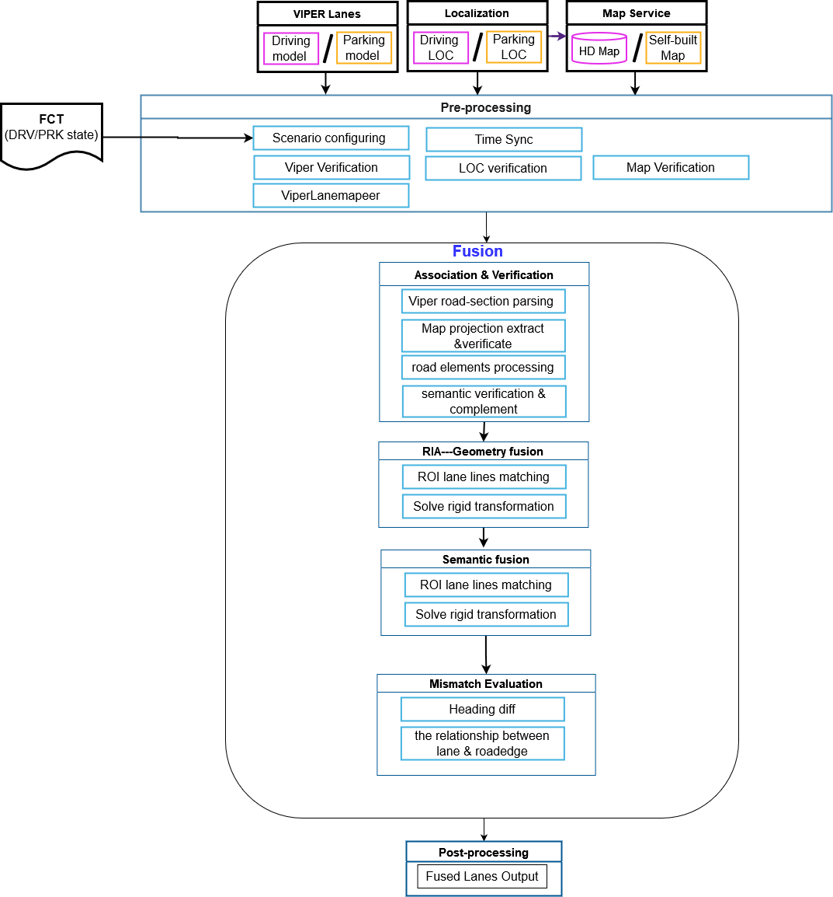
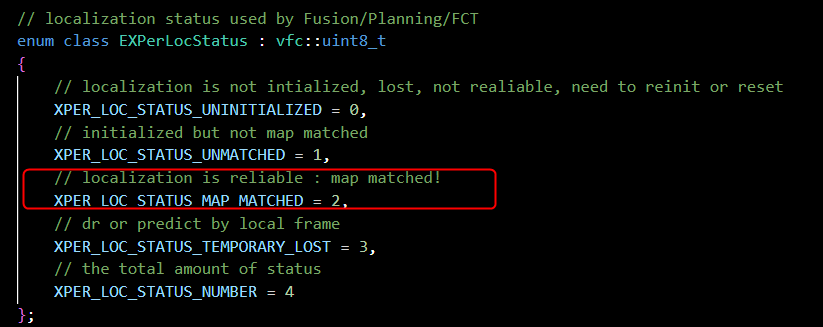
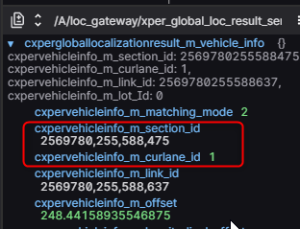
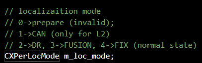
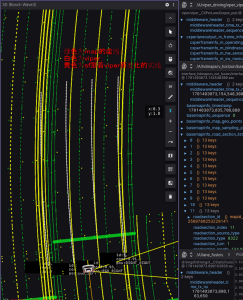
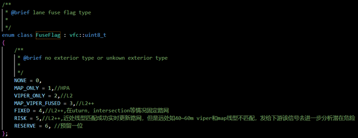

LaneFusion Introduction
Lanefusion Framework

Data Analysis
1.Check for upstream
1)LOC:
Global_loc
m_xper_global_loc_result_receiverport.m_status == XPER_LOC_STATUS_TEMPORARY_LOST
m_xper_global_loc_result_receiverport.m_status == XPER_LOC_STATUS_UNINITIALIZED

Global loc Lane level positioning
m_xper_global_loc_result_receiverport.m_vehicle_info.m_section_id == 0
m_xper_global_loc_result_receiverport.m_vehicle_info.m_curlane_id == 255

Local_loc
m_xper_local_loc_result_receiverport.m_loc_mode.m_mode == 0 invalid value
m_xper_local_loc_result_receiverport.m_loc_mode.m_mode == 1 invalid value

2)Map
m_base_map_info_hd_receiverport
3)Viper
Frame rate
Whether has valid segment
Position precision（Ego left, Ego right, LL, RR）
Lane atrtribute precision（Solid，Dash）
FP、FN
2.Fusion Result：

3.LaneFuse flag

Commonly used tools
Wavizzz
DOL(single simulation, automated pipeline)
ROS